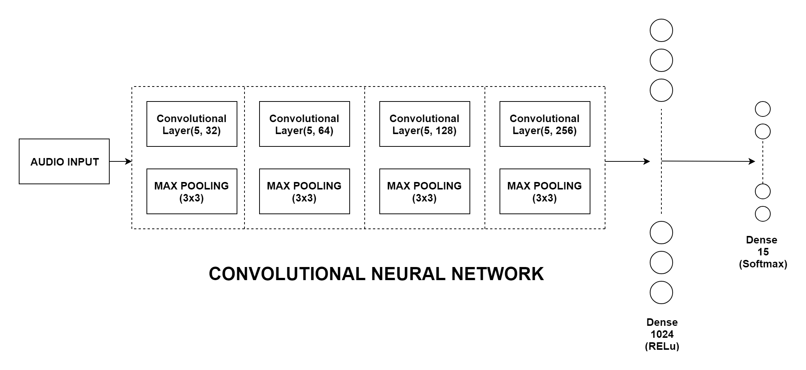

2. Proposed Approach
In general, a full 44.1 kHz audio was used without downsampling. Then, 128 bin mel-scale spectrograms were extracted which is a sufficient size to keep the spectral characteristics while greatly reducing the feature dimensions. Instead of converting the collected spectrograms to their corresponding images since their is always a compression loss, we directly passed the numpy array for preprocessing.

The following features were extracted from the input stereo audio:
Mono Channel : The stereo audio was linearly averaged over its left and right channel to achieve the mono channel.
Left, Right Channel : The mel spectrogram numpy array collected was divided into left and right Channel.
Mid, Side Channel : Mid Channel= Left Channel + Right Channel; Mid Channel : Side Channel= Left Channel - Right Channel
Harmonic, Percussive Feature : Sound can be generally divided into two types: harmonic and percussive. Here, using a Harmonic-Percussive-Source-Separation algorithm, we separated the Harmonic and Percussive components to get a better discrimination between 2 sounds.
MFCC Feature : In sound processing, the mel-frequency cepstrum(MFC) is a representation of the short-term power spectrum of a sound, based on a linear cosine transform of a log power spectrum on a nonlinear mel scale of frequency. Mel-frequency cepstral coefficients(MFCCs) are coefficients that collectively make up an MFC. They are derived from a type of cepstral representation of the audio clip. The difference between the cepstrum and the mel frequency cepstrum is that in the MFC, the frequency bands are equally spaced on the mel scale, which approximates the human auditory system's response more closely than the linearly-spaced frequency bands used in the normal cepstrum.

Thus 8 features were collected. 8 classifiers were trained for the 8 features. A deep Convolutional Neural Network was used as the classifier with 4 Convolutional and Pooling Layers and 1 Hidden Layer. However, it was found that it is not highly effective to increase the number of layers or to use a residual connection, at least in this framework, likely due to insufficient amount of data to extract full advantage out of it. ReLU non-linearity was used for activation and the last layer has softmax output to calculate the probability of success for further ensemble learning.
The results of the 8 classifiers were thus taken as input and 8 Support Vector Regressors were trained on the validation set (20% of training set), for each classifiers output as input. This gave us the weights(also called success prediction function) of the 8 classifiers.
The input to the SVR is {X_validation, Y} where (Y = kronicker_delta(predicted_label - class_label) for all X_validation for all features)
The purpose of using SVR to predict weights is that the weights are not only classifier dependent but also instance dependent. This becomes important when a classifier gives good results for a particular part of the feature space(region of success) and gives worse results for other parts.